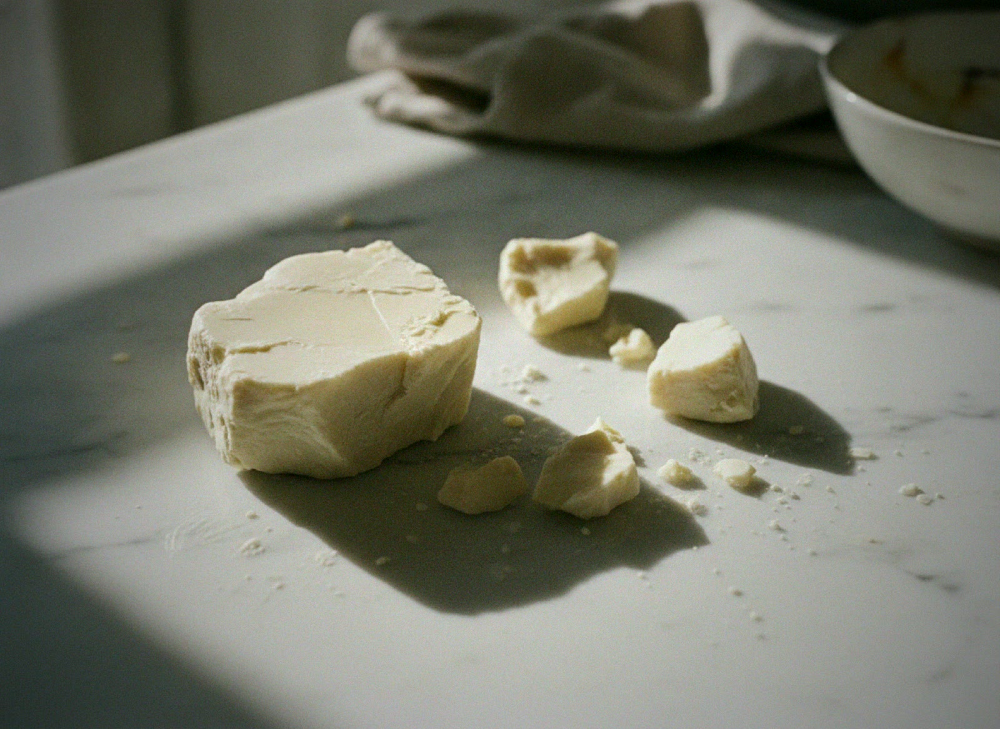
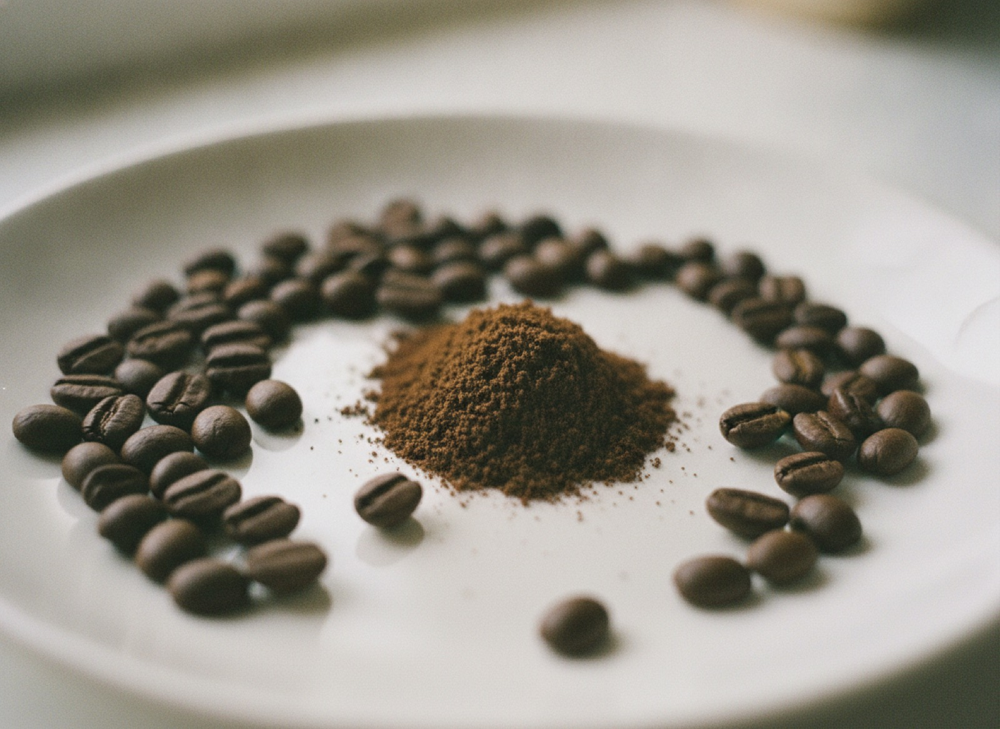
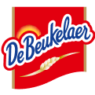

Our purpose
We are an ingredient company built for permanence — recreating the world's most-loved flavours from renewable nature, at the scale industry depends on, so that indulgence and the planet are no longer at odds.
Why we exist
Nature is changing, and the crops behind the world's favourite flavours feel it first. We don't meet that with alarm — we meet it with patience, science and a longer horizon, renewing each ingredient so it can be relied upon, quietly, for generations.
Rooted in nature
Portfolio
Two ways forward for any ingredient you rely on: a true alternative that stands on its own, or a booster that makes the original go further. Each built for the scale and consistency the world's kitchens depend on.
 Alternative
AlternativeOur flagship — cocoa-free chocolate, fermented from locally grown ingredients. The taste of chocolate, without the cocoa bean behind it.

Alternative · FatThe fat side of chocolate, reinvented. A cocoa-butter alternative produced with synthetic biology — pairs with ChoViva for a complete cocoa-free system.
 Booster
BoosterA cocoa extender that lets you use less real cocoa while keeping the taste you expect — so cost holds steady, whatever the market does.
Ready-to-use compound chocolate systems blending real cocoa with Cocoa Booster — engineered for your application.
 Alternative · Booster
Alternative · BoosterReplace hazelnut outright, or extend it — for spreads, fillings and pralines that stay on taste and on budget.
 Alternative · Booster
Alternative · BoosterReplace or extend vanilla and smooth out its price swings — with a rounded, dependable flavour profile.
 Alternative
AlternativeThe coffee experience without the coffee bean — the taste and ritual, from a resilient, dependable source.

BoosterA coffee extender that stretches every bean further — protecting margin as green-coffee costs move.
The science
Chocolate is flavour and fat working together. Fermentation rebuilds the flavour; synthetic biology rebuilds the fat. Owning both halves lets us recreate whole ingredients — not imitations — and produce them at industrial scale.
Explore the technologySolutions & co-development
We don't simply supply ingredients. We sit alongside your R&D to imagine and build integrated, application-ready solutions — from the first spark of a concept to industrial launch.
How we partner
We start with your challenge — a taste, a cost line, a supply risk — and the right product to meet it.
Our scientists work beside your R&D to tune the solution to your recipe, process and line.
We prove it in real application and to your quality and procurement teams, with the documentation they need.
We deliver at volume from two GFSI-certified sites — what you validate is what you buy by the tonne.
The long view
Because our ingredients come from resilient, renewable sources rather than climate-exposed crops, they carry a far lighter footprint — on land, on water, on carbon. We treat that not as the sales pitch, but as the quiet reason all of this endures.
Our approach to scaleThe flavours that shaped human culture shouldn't be a casualty of how we grow them. Our work is simply to make sure they last.Planet A Foods
What endures
Beneath every product lie the same convictions: supply that holds, chains that bend without breaking, sovereignty over your own ingredients, and prices you can plan a future around.
Built for industry
Two production sites for resilience, 30,000 MT of annual capacity, and GFSI-certified food safety — an industrial partner, ready to scale with you.
Front-end innovation
Our innovation looks past the current harvest to the ingredients that will be scarce, contested or costly tomorrow — and gets ahead of them. Trend foresight, early-stage development and open co-innovation with partners who want to move first.
Planet A Academy
The Academy is our know-how hub — sensory and application training, technical guidance and thought leadership — so your teams get the most from every product, and the wider industry moves faster toward resilient taste.
Insights
How fermentation and synthetic biology recreate whole ingredients.
Why two sites and renewable inputs change the risk equation.
Where each fits across sweet goods, snacks and beverages.
Trusted by the makers you know

Let's build it together
Request a sample, or start a co-development conversation with our team.